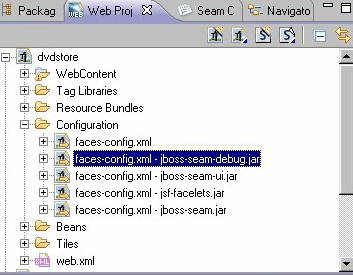

< Main Index JBoss Tools Portlet>
In case of projects with multiple similar named resources (i.e. faces-config.xml in Seam projects) we now add a small label to the name to indicate where the resource is from.

Related Jira